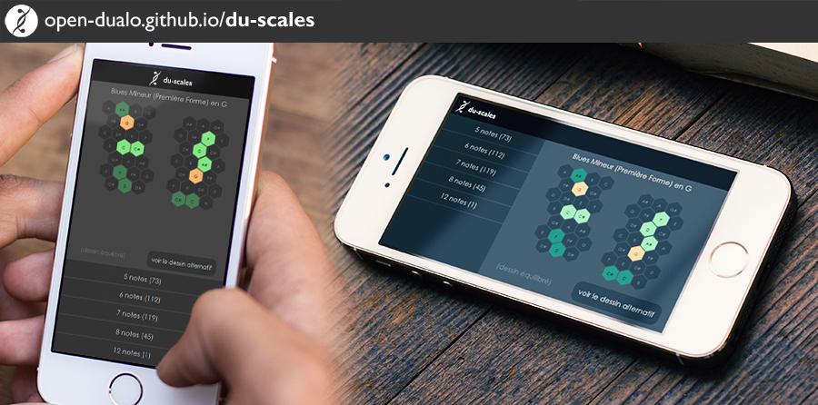

Applications libres et recherches autour du dualo du-touch, nouvel instrument de musique numérique.

du-scales : Toutes les gammes, selon le principe dualo
- JavaScript
- D3js
- JSON
- SVG
- CSS3
- HTML5
Dictionnaire intéractif de 351 gammes uniques, affichage clavier piano ou dualo du-touch.
Le dualo du-touch, ainsi que le principe dualo, ont l'objectif particulier de simplifier la musique, la rendre visuelle, logique, instinctive, mémotechnique.
Projet libre et open-source, par Julien Caillot (BilouMaster Joke).
Consultez le code et la base de données sur GitHub !